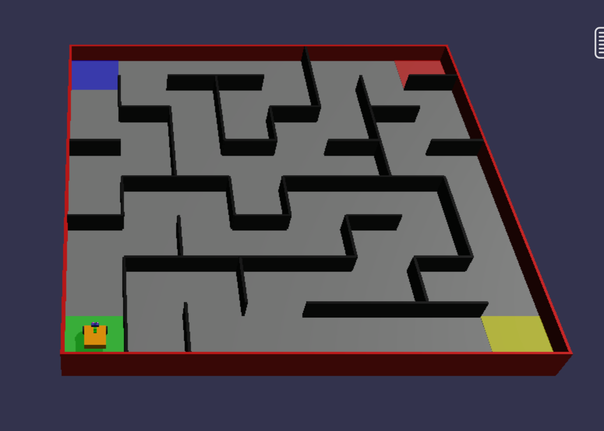

Lesson 2 · Tank movement
Find your way.
Watch the wheels. Plan your route. Take on the maze.
01
Two wheels. Six ways to move.
LEFT WHEELSame speed
+20%↑ forwards
RIGHT WHEELSame speed
+20%↑ forwards
ROBOT’S ROUTE
Camera follows the robot · illustration
move tank with left speed 20 and right speed 20 %
+ forwards · − backwards. Going forwards? Turn towards the slower wheel.
02
Our maze
Worlds → Select World → Maze Map
Click Default. Enter the code in Maze Seed, then click Ok.
MAZE CODE · CAPITAL LETTERSMAZE
Keep the default robot. Check that your maze matches this picture.

03
Visit all three checkpoints.
- SGreenStart
- 1YellowFirst
- 2RedNext
- 3BlueFinish
1PlanTrace the route to yellow first.
2BuildUse tank blocks. Add one move at a time.
3TestReset → Run → Adjust.
Need starting values for your tank blocks?
Use Motion → move tank … for ….
| Move | Left % | Right % | Wheel degrees |
|---|---|---|---|
| Forward ≈ 1 cell | 20 | 20 | 820 |
| Left ≈ 90° | −10 | 10 | 250 |
| Right ≈ 90° | 10 | −10 | 250 |
Starting values for the default robot and maze. Test and adjust. Wheel degrees are not the robot’s turning angle.
Reach blue. Stop. Play a beep.Save your blocks + a screenshot.